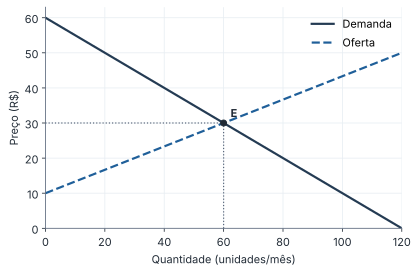
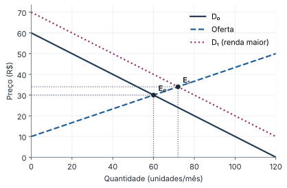
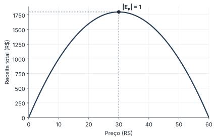

| Gráficos | Calculados a partir das equações do texto (matplotlib), não desenhados à mão: os números da figura são os mesmos das contas. |
| Exemplo-guia | Um único mercado (Qd = 120 − 2P; Qs = 3P − 30) atravessa as duas folhas de conteúdo e as questões. |
| Cores | Vermelho = erro comum; verde = macete; âmbar = exceção. O resto é estrutura. |

No gráfico, preço no eixo vertical (convenção da economia): demanda P = 60 − Q/2; oferta P = 10 + Q/3.
| Critério | Demanda | Oferta |
|---|---|---|
| Lei | preço ↑ ⇒ Qd ↓ | preço ↑ ⇒ Qs ↑ |
| Inclinação | negativa | positiva |
| Desloca com | renda, preço de substitutos e complementares, preferências, expectativas, nº de compradores | custo dos insumos, tecnologia, expectativas, nº de vendedores |
Mudança no preço do próprio bem não desloca a curva: é movimento ao longo dela (muda a quantidade demandada). Só os outros determinantes deslocam a curva (muda a demanda).

| Demanda ↑ | P* ↑ e Q* ↑ |
| Oferta ↑ | P* ↓ e Q* ↑ |
Teto abaixo do equilíbrio gera escassez; piso acima gera excedente. Teto acima ou piso abaixo de P* não têm efeito.
Mede a sensibilidade da quantidade demandada a uma variação do preço, em termos percentuais (sem unidade).
| |Ep| | Demanda | Se o preço sobe, a receita total… |
|---|---|---|
| > 1 | elástica | cai |
| = 1 | unitária | não muda |
| < 1 | inelástica | sobe |
P: 30 → 40 e Qd: 60 → 40. %ΔQ = −20/50 = −40%; %ΔP = 10/35 ≈ 28,6%. Ep ≈ −1,4: elástica. Receita: 30 × 60 = 1.800 → 40 × 40 = 1.600 (cai), como a tabela prevê.
Receita total e preço andam juntos na demanda inelástica (o consumidor "não foge"); em sentidos opostos na elástica.
Inclinação ≠ elasticidade. Na reta de demanda a inclinação é constante, mas a elasticidade muda em cada ponto: é alta perto do intercepto do preço e baixa perto do da quantidade.

| Trecho | |Ep| | Preço ↑ ⇒ RT |
|---|---|---|
| P < 30 | < 1 (inelástica) | sobe |
| P = 30 | = 1 (unitária) | máxima: R$ 1.800 |
| P > 30 | > 1 (elástica) | cai |
Na demanda linear, |Ep| = 1 no ponto médio da reta (aqui, P = 30, metade do intercepto 60).
Uma redução no preço de um bem desloca a curva de demanda desse bem para a direita.
Num mercado com demanda Qd = 120 − 2P e oferta Qs = 3P − 30, o preço e a quantidade de equilíbrio são, respectivamente:
No mesmo mercado, o governo fixa um preço máximo de R$ 20. O resultado é:
Se a demanda por um bem é inelástica ao preço, um aumento do preço eleva a receita total dos vendedores.
A elasticidade-preço cruzada da demanda entre os bens X e Y é negativa. Pode-se afirmar que X e Y são: